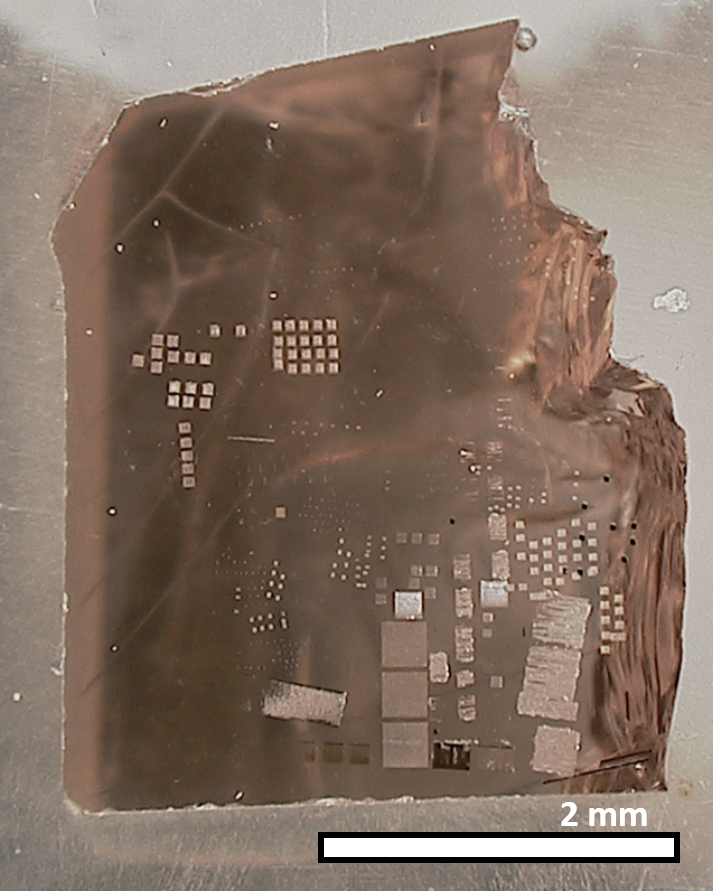
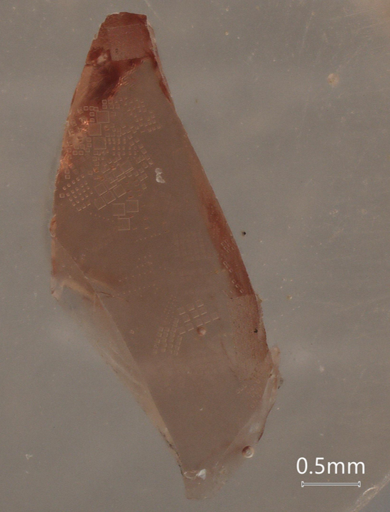
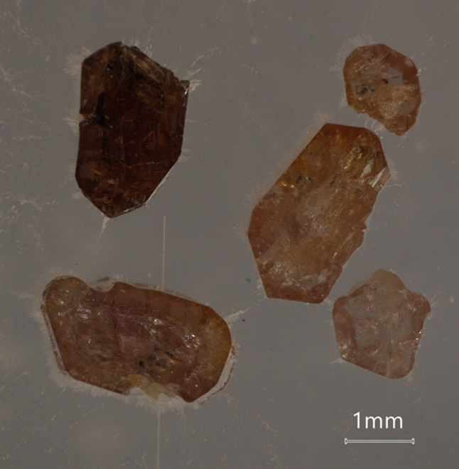

年代分析用標準鉱物
鉱物標本
□年代分析用標準鉱物
・GJ-1 zircon
- 
U–Pb intercept age (Wetherill Concordia diagram) : 608.53 ± 0.37 Ma (95% conf.)(Jackson et al., 2004, Chemical Geology, https://doi.org/10.1016/j.chemgeo.2004.06.017.)
U: 289 ppm; Th: 7.6 ppm; Pb: 25.8 ppm
238U–206Pb: 0.09761 ± 0.00011; 235U–207Pb: 0.8093 ± 0.0009; 207Pb–206Pb: 0.06014 ± 0.00001
GJ-1 zirconは単一の均質結晶に由来する破片が全世界に頒布されており，LA-ICP-MSを用いたU–Pb年代測定において同位体比較正用標準物質として利用されている．ディスコーダントなU–Pb同位体比であるが，その均質性は高い．Th/U比は低い(0.1未満)．
・91500 zircon
U–Pb age : 1065.4 ± 0.3 Ma (1σ) (Wiedenbeck et al., 1995, Geostandards Newsletter, https://doi.org/10.1111/j.1751-908X.1995.tb00147.x.)
U: 81.2 ppm; Th: 28.6 ppm; Pb: 14.8 ppm
238U–206Pb: 0.17917 ± 0.00008; 235U–207Pb: 1.8502 ± 0.0008; 207Pb–206Pb:0.07488 ± 0.00001 (但し非放射起源鉛補正後の同位体比)
91500 zirconは単一の均質結晶に由来する破片が全世界に頒布されており，その極めて高い均質性のために年代分析や微量元素分析の標準物質としておそらくはこれまで最も分析されてきたジルコンであろう。
まさにジルコン分析の基準として用いられてきた91500 zirconであるが、もともとハーバード博物館に所蔵されていた238 gの結晶全てを消費してしまう日が将来訪れるのは必至である。91500 zirconに匹敵する質を有する二匹目の泥鰌を探す、もしくは合成標準物質作製法を開発するなど、我々が解決策を模索しなければならない。
ちなみに91500 zirconが採取されたKuehl Lake付近に産するジルコンはmindatのウェブサイト上で紹介されている。ここに挙がっている中に二匹目の泥鰌がいるかもしれない。
・Plešovice zircon
U–Pb age (Weighted average of Isotope Dilution-TIMS U–Pb age) : 337.13 ± 0.37 Ma (Sláma et al., 2008, Chemical Geology, https://doi.org/10.1016/j.chemgeo.2007.11.005.)
チェコのPlešoviceに産するジルコンは高ウラン濃度(ca. 1000 ppm)かつ年代値の観点での均質性からLA-ICP-MSを用いた年代分析で度々登場するジルコン標準である。今でも石切り場がおそらく稼働していてavailabilityが担保されているのも良い。日常的に消費しても枯渇の心配はあまりないだろう。その一方で鉱物粒子内部は累帯構造を有し、その不均質性から微量元素濃度標準としては扱いづらい。
・OD-3 zircon

U–Pb age (LA-ICP-MS and SIMS) : 33.0 ± 0.1 Ma (Iwano et al., 2013, Island Arc, https://doi.org/10.1111/iar.12038.)
U–Pb age (Isotope Dilution-TIMS) : 32.853 ± 0.016 (Lukács et al., 2015, Contributions to Mineralogy and Petrology, https://doi.org/10.1007/s00410-015-1206-8.)
OD-3 zirconは島根県の川本花崗閃緑岩に由来する多粒子のジルコンである。OD-3 zirconは複数の研究機関での分析結果からそのU–Pb年代の均質性が評価されており、日本初のジルコン標準物質として活用されている。OD-3 zirconのU–Pb年代とフィッショントラック年代が誤差範囲内で一致することからOD-3 zirconはジルコンダブル年代分析の標準物質として用いられ、中新世やそれより若い時代の研究を遂行する上で不可欠な存在となっている。
・MAD apatite (Madagascar)
MAD1のU–Pb age (Weighted average of Isotope Dilution-TIMS U–Pb age) : 486.58 ± 0.85 Ma (Thomson et al., 2012, GGR, https://doi.org/10.1029/2011GC003928.)
MAD2のU–Pb age (Weighted average of Isotope Dilution-TIMS U–Pb age) : 474.25 ± 0.41 Ma (Thomson et al., 2012, GGR, https://doi.org/10.1029/2011GC003928.)
個々の粒子内部では極めて高い均質性を有する反面、粒子ごとにU–Pb同位体比が異なることが知られており、MAD1とMAD2の2種類のフラクションについて報告がある。
・Otter Lake apatite
U–Pb age (Pb–Pb isochron age obtained by step-leaching TIMS ) : 913 ± 7 Ma (Barfod et al., 2005, GCA, https://doi.org/10.1016/j.gca.2004.09.014.)
Lu–Hf age (Isochron age obtained by MC-ICP-MS) : 1031 ± 6 Ma (Barfod et al., 2005, GCA, https://doi.org/10.1016/j.gca.2004.09.014.)
Otter Lake apatiteはカナダのケベック州にあるYates Mineに産する。燐灰石からはU–Pb年代系およびより閉鎖温度の高いLu–Hf年代系について調べられている。特に近年手法開発が進んでいる局所Lu–Hf年代測定を実施する上で重要な年代標準であろう。